Introduction to Machine Learning and Data Mining
Clustering
Kyle I S Harrington / kyle@eecs.tufts.edu
Some slides adapted from Roni Khardon
Unsupervised learning
Machine learning on unlabeled data
Techniques include: clustering, expectation-maximization, some signal processing (PCA), etc.
Clustering
Grouping instances/objects into sets/clusters based on similarity
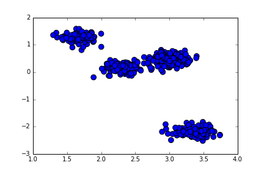Clustering: Notation
Partition data into clusters $C_1,...,C_k$
Centroid of cluster $j$: $\mu_j = \frac{1}{|C_j|} \displaystyle \sum_{x \in C_j} x$
Centroid of dataset: $\mu = \frac{1}{N} \displaystyle \sum_j \displaystyle \sum_{x \in C_j} x$
Data Clustering
What makes a good cluster?
- Does it look reasonable?
- Does it look reasonable to an expert?
- Can it be used in another task?
- Is the result consistent across different clusterings?
Data Clustering
What makes a good cluster?
- Cluster scatter
- Cluster distance
- Spacing
Cluster Scatter
For a given clustering, what is the average variance from centroid for all clusters?
$CS = \displaystyle \sum_j \displaystyle \sum_{x \in C_j} || x - \mu_j ||^2$
| 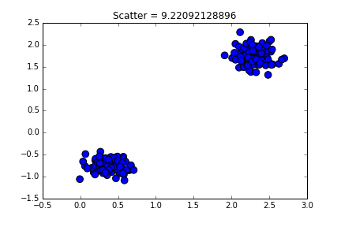 | 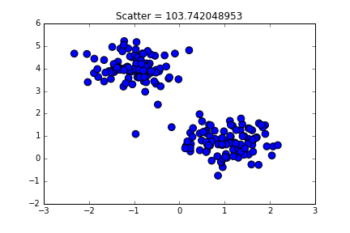 |
| Low | High |
Cluster Distance
How distinct are cluster centroids from the centroid of the entire dataset?
$CS = \displaystyle \sum_j | C_j | \cdot || \mu_j - \mu ||^2$
| 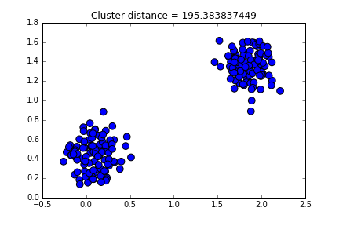 | 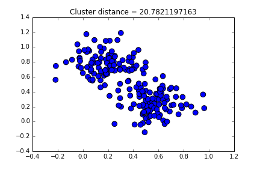 |
| Low | High |
Cluster Spacing
What is the shortest distance between instances of two clusters?
$Spacing = min_{i,j} [ min_{x \in C_i, y \in C_j} || x - y ||^2]$
| 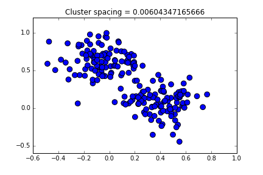 | 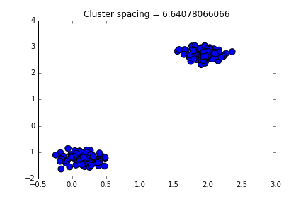 |
| Low | High |
Potential issues
- Sensitivity to feature scaling
- Outliers
Agglomerative Hierarchical Clustering
- Initialize each point as 1 cluster
- Iterate:
- Find most similar pair of clusters
- Replace with union of clusters
How do we determine "most similar"?
When are we done?
Agglomerative Hierarchical Clustering
Distance functions for clusters:
$d_{min} (C_i, C_j) = \displaystyle min_{x \in C_i, y \in C_j} || x - y ||^2$
$d_{max} (C_i, C_j) = \displaystyle max_{x \in C_i, y \in C_j} || x - y ||^2$
$d_{avg} (C_i, C_j) = \frac{1}{|C_i| \cdot |C_j|} \displaystyle \sum_{x \in C_i} \displaystyle \sum_{y \in C_j} || x - y ||^2$
Hierarchical Clustering
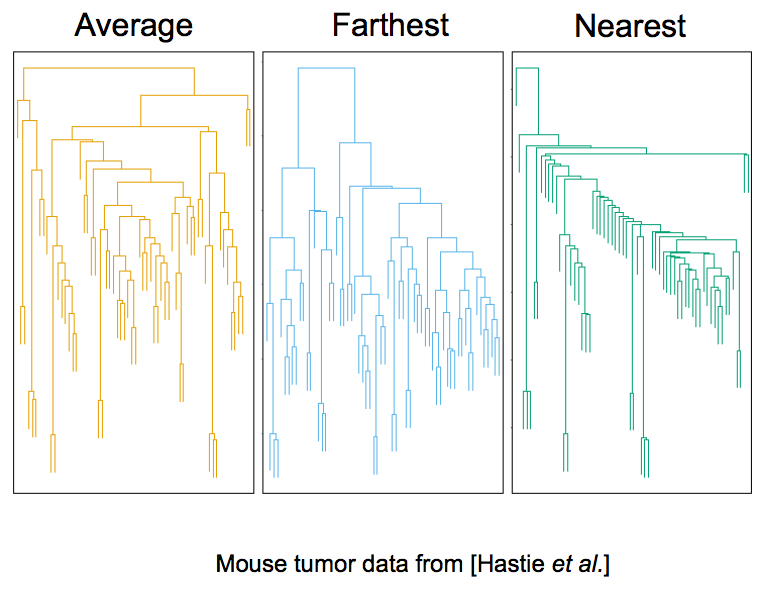Agglomerative Hierarchical Clustering
The algorithm yields a sequence of clusterings.
The user decides which clustering is preferred (num clusters, cluster variance, etc.)
Divisive Hierarchical Clustering
- Initialize all data in 1 cluster
- Iterate:
- Choose a cluster and its best split
- Replace cluster with the split
How do we determine the "best split"?
Limitations of Hierarchical Clustering
Speed
K-means Clustering
Partition the data into $k$ clusters
Iteratively update cluster assignments using centroids
K-means Clustering
- Initialize centers of $k$ clusters
- Iterate until convergence:
- Label each point as closest cluster
- Recalculate centers
K-means example
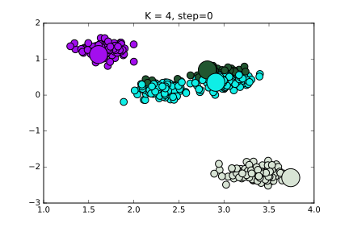K-means example
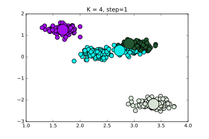K-means example
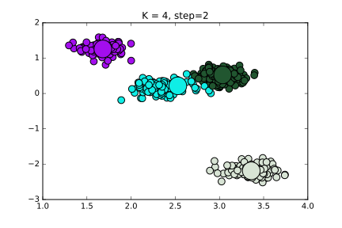K-means example
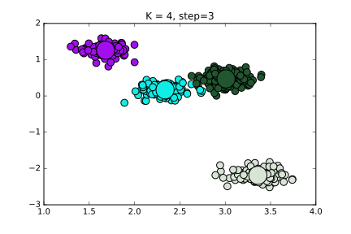K-means example

How to pick K?
Run with different values of k, and measure quality
| 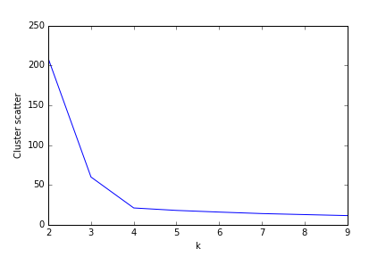 |
| 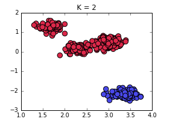 | 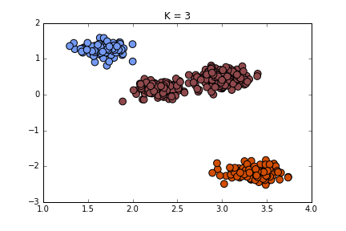 | 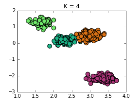 | 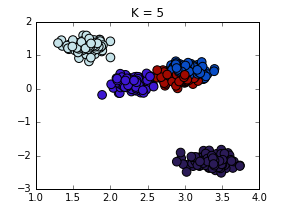 | 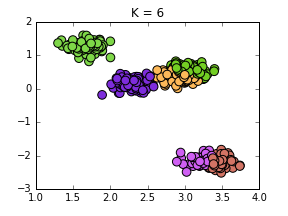 |
K-means Clustering
Sensitivity to initial conditions
Sensitivity to outliers
K-means Clustering
Sensitivity to initial conditions: repeat with multiple initial conditions
Sensitivity to outliers: use median instead of mean
Comparing Clusterings
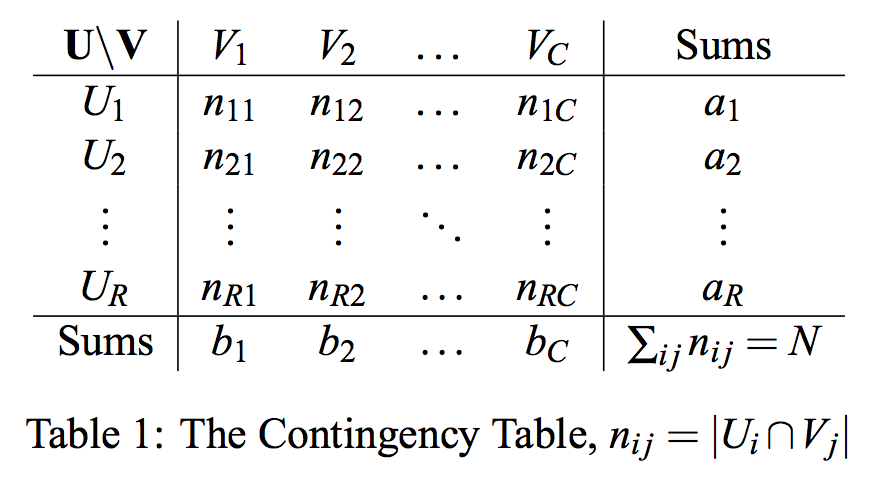From Vinh, Epps and Bailey, 2010
Comparing Clusterings
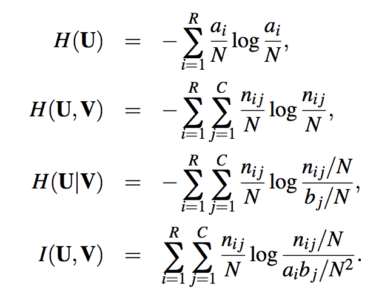From Vinh, Epps and Bailey, 2010
Comparing Clusterings
Using the mutual information directly is sensitive to the number of clusters, therefore the normalized mutual information must be calculated by dividing by entropy
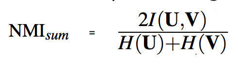From Vinh, Epps and Bailey, 2010
Assignment 4
Posted here
Due: March 15 (hardcopy in class)
What Next?
Machine learning in games
Go!
Suggested reading: Mastering the game of Go with deep neural networks and tree search